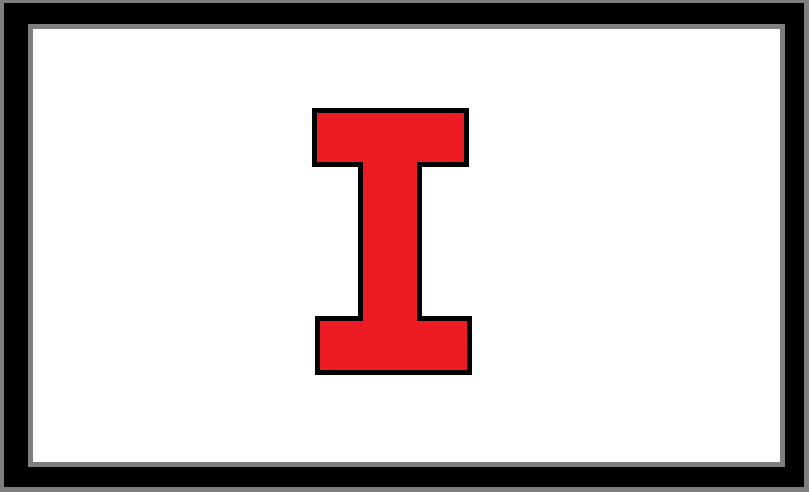
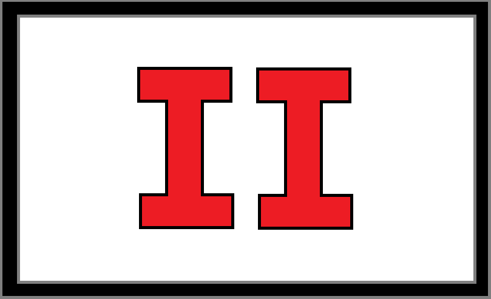

What are Regions:
The World Order, under The Nation has seen all former country's abolished. Their borders erased, replaced with a single State. The Nation has politically organised the world into 375 Regions, each of fairly equal population and Urban Enclaves. Each Region is repsented by a Regional Chancellor, who inturn oversees their smaller systems of government
The first Region of The Nation, located in former Queensland, Australia. This Region saw the Birthplace of the Movement, which lead to the creation of The Nation. This Region is represented by the Numeral I, meaning 1
The Secound Region of The Nation, located in roughly News South Wales, Australia. Containing the former capital seized by The Movement, a step towards the creation of The Nation. This Region is represented by the Numeral II, meaning 2
Back To Home